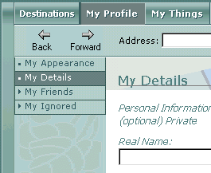

My Details
The
My Details area provides a way to let other members learn more about you. In this area, you can include such details as your real name, your birthday, and where you are from. You can mark items
Private, allowing only the members on your
My Friends list to view this information.
When you add information to the My Details area and click Apply, other members of
Desktop World can view this information in the People menu.
To view the profile of any member in Desktop World, click the  tab, open either the Who Is Here or Who Was Here menu (depending on whether or not that person is logged on), click the name of the member, and select Profile from the list of options below his or her name. You may also view and change your own profile information from this area.
tab, open either the Who Is Here or Who Was Here menu (depending on whether or not that person is logged on), click the name of the member, and select Profile from the list of options below his or her name. You may also view and change your own profile information from this area.
Filling in the items in the My Details area is optional, but supplying this lets others get a better idea of who you are. If you choose not to fill in an item, such as your birthday, other members will see the message, "Not Recorded" under the Birthday heading.

My Details areas
Personal Information
Includes areas for you to enter your real name, where you're from, your e-mail address, and a comment, such as a personal motto or favorite saying.
Additional Information
Provides sections to enter details about your hobbies and interests, your birthday, and how you discovered you had cancer.
My Details options
Private
Allows you to mark information supplied in a text area as available only to certain guests. A check mark in the Private check box next to an item means the information in that area is visible only to yourself and other members whom you have added to your My Friends list. Items that are not marked private are visible to all members of
Desktop World.
Apply
Saves the information you have entered. Clicking Apply also updates your profile for other members of
Desktop World to view.
See also